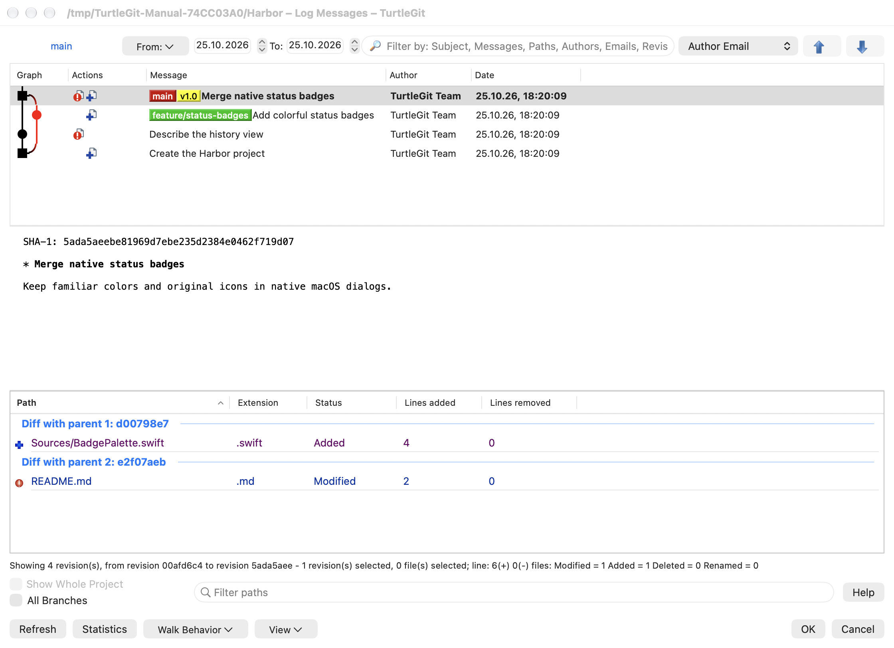
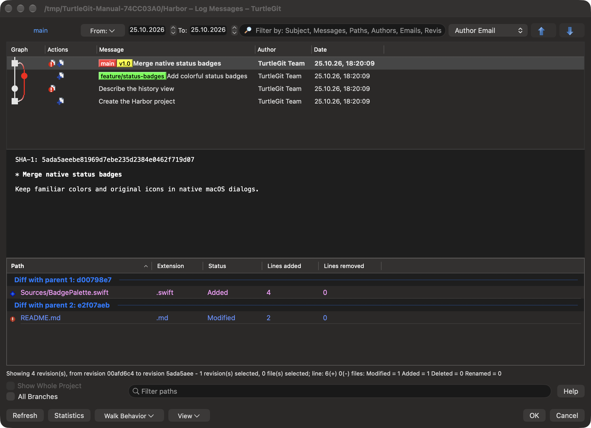
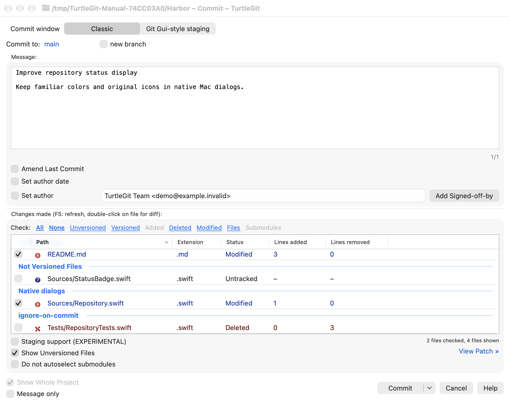
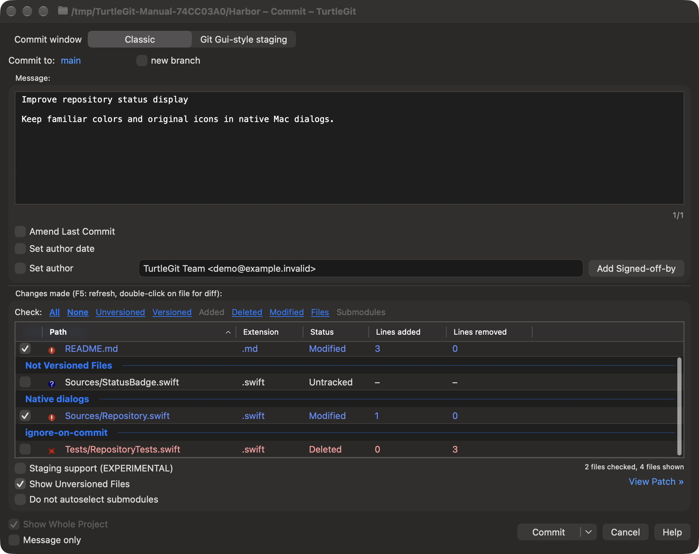

The power of Git.
At home on your Mac.
A macOS fork of TortoiseGit. Review changes, explore history and manage your repositories with familiar Git tools in native Mac windows and Finder.
Read the manualmacOS 13 or later · Apple silicon and Intel
Git, close at hand
The macOS port is authored by Jochen Kühner.
Start from Finder with Git context menus and colored file status badges. Open the dialog you need: Commit, Log, branches, tags, remotes or synchronization. A repository workspace is available when you want a broader view.
Follow branches and merges in the history graph, inspect each commit’s changed files, and use Blame to trace a line’s origin. Review changes with built-in comparison and conflict-resolution tools, then choose what to stage and commit.
Native Mac controls, light and dark appearances, keyboard shortcuts and offline help keep everyday Git work close at hand.
Your repositories, in light and dark
Current native windows, captured with a sample repository. Select an image to see it at full size.







